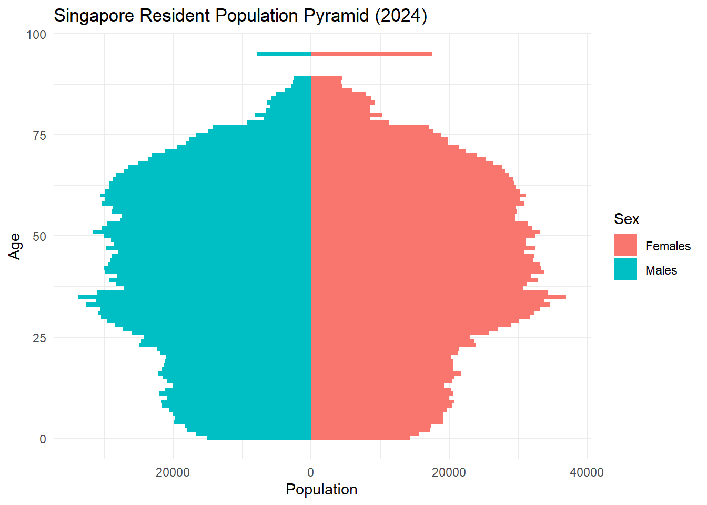
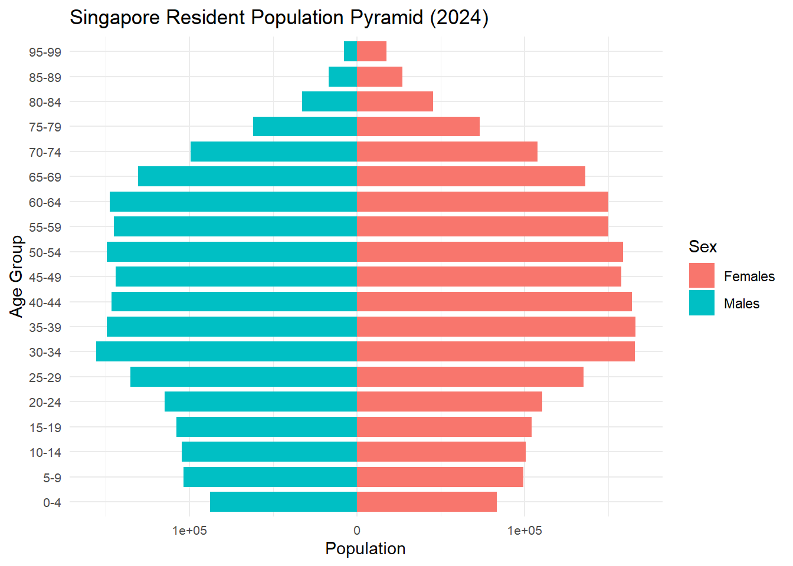
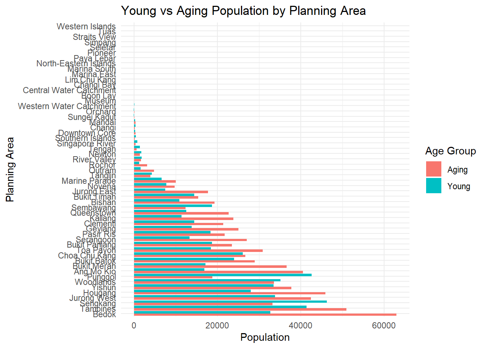
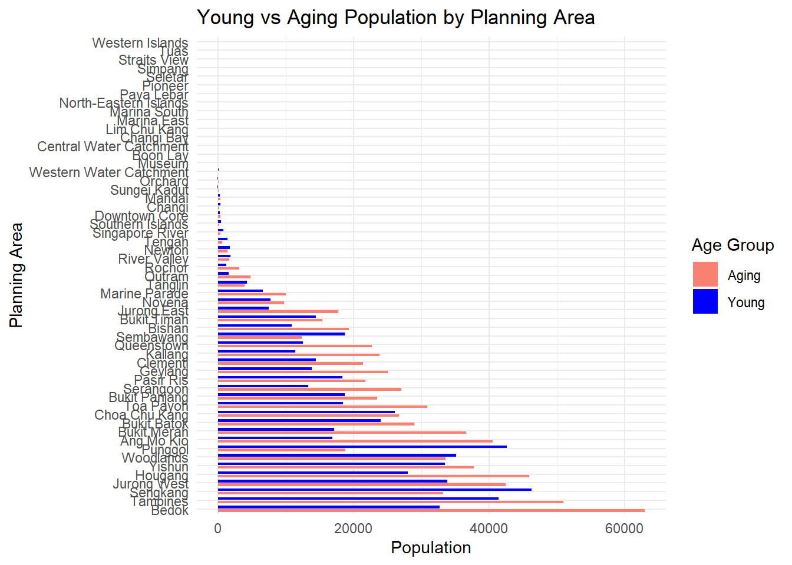
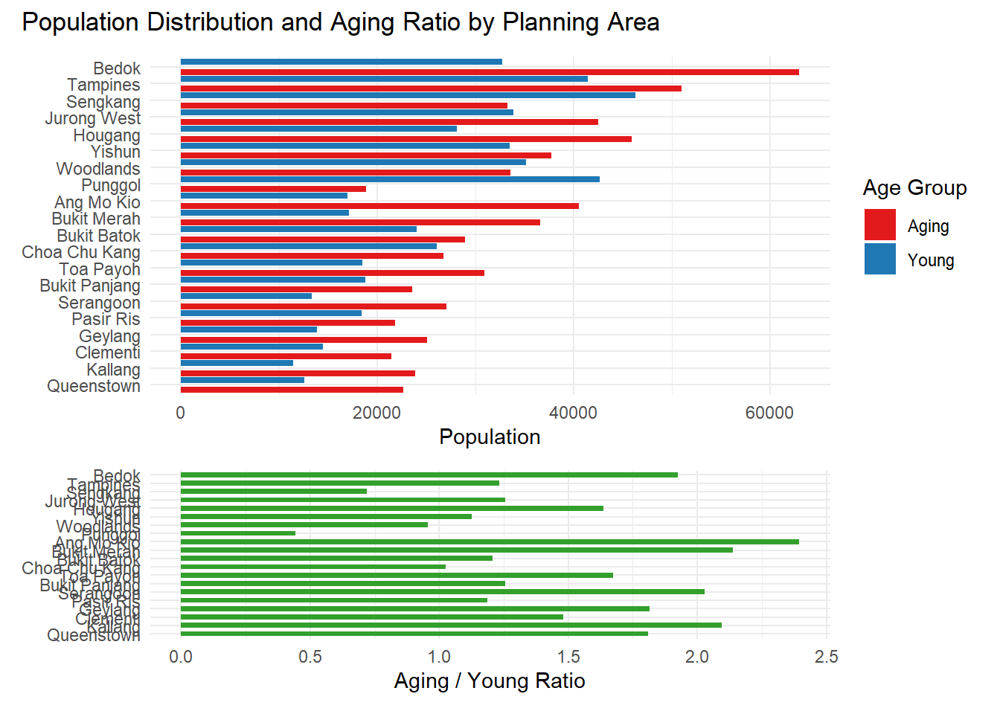
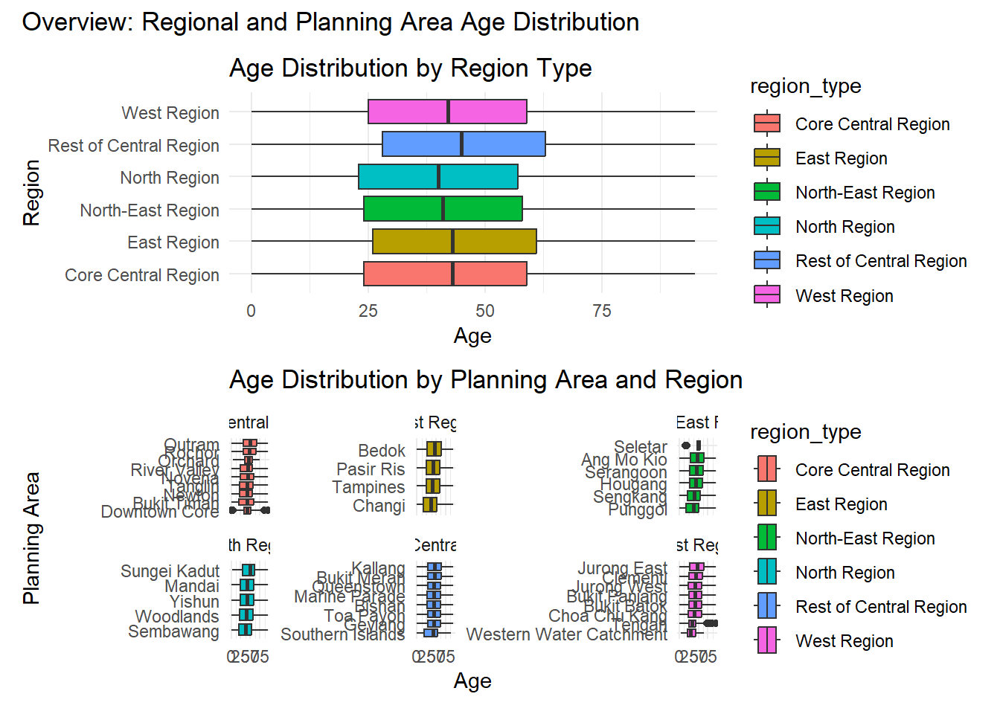

pacman::p_load(tidyverse, ggplot2, dplyr, forcats, ggthemes, patchwork, knitr, gt)Take-home_Ex01_Part2
Reference Source: https://isss608-ay2025t2.netlify.app/take-home_ex/take-home_ex01/take-home_ex01
Students Name: FU YILIN
data <- read_csv("respopagesex2024/respopagesex2024.csv") %>%
mutate(Age = ifelse(Age == "90_and_Over", "95", Age),
Age = as.numeric(Age)) %>%
drop_na(Age)Rows: 60424 Columns: 6
── Column specification ────────────────────────────────────────────────────────
Delimiter: ","
chr (4): PA, SZ, Age, Sex
dbl (2): Pop, Time
ℹ Use `spec()` to retrieve the full column specification for this data.
ℹ Specify the column types or set `show_col_types = FALSE` to quiet this message.Data Visualization 1
pyramid_data <- data %>%
group_by(Age, Sex) %>%
summarise(Pop = sum(Pop), .groups = "drop") %>%
mutate(Pop = if_else(Sex == "Males", -Pop, Pop))
pyramid_plot <- ggplot(pyramid_data, aes(x = Age, y = Pop, fill = Sex)) +
geom_bar(stat = "identity", width = 1) +
coord_flip() +
scale_y_continuous(labels = abs) +
labs(title = "Singapore Resident Population Pyramid (2024)",
x = "Age", y = "Population") +
theme_minimal()
pyramid_plot
Improvement 1:
library(tidyverse)
data_binned <- data %>%
mutate(
age_group = cut(
Age,
breaks = seq(0, 100, by = 5),
right = FALSE,
labels = paste0(seq(0, 95, by = 5), "-", seq(4, 99, by = 5))
),
age_group = factor(age_group, levels = paste0(seq(0, 95, by = 5), "-", seq(4, 99, by = 5)))
)
pyramid_data <- data_binned %>%
group_by(age_group, Sex) %>%
summarise(Pop = sum(Pop), .groups = "drop") %>%
mutate(Pop = if_else(Sex == "Males", -Pop, Pop))
ggplot(pyramid_data, aes(x = age_group, y = Pop, fill = Sex)) +
geom_col(width = 0.8) +
coord_flip() +
scale_y_continuous(labels = abs) +
labs(
title = "Singapore Resident Population Pyramid (2024)",
x = "Age Group",
y = "Population"
) +
theme_minimal() +
theme(
axis.text.y = element_text(size = 8),
axis.text.x = element_text(size = 8)
)
Data Visualization 2
age_groups <- data %>%
filter(Age <= 14 | Age >= 65) %>%
mutate(group = case_when(
Age <= 14 ~ "Young",
Age >= 65 ~ "Aging"
)) %>%
group_by(PA, group) %>%
summarise(total_pop = sum(Pop), .groups = "drop")
ggplot(age_groups, aes(x = reorder(PA, -total_pop), y = total_pop, fill = group)) +
geom_col(position = "dodge") +
coord_flip() +
labs(title = "Young vs Aging Population by Planning Area",
x = "Planning Area", y = "Population", fill = "Age Group") +
theme_minimal()
Comment2:
First of all, there are lots of data have no values in the graph. It will make the graoh overall more inormation-focused my removing the empty part. Secondly, the color of two age groups should be more contrast and the space between genders should be wider as we can see it is difficult distinguish the age group.
Improvement 2
ggplot(age_groups, aes(x = reorder(PA, -total_pop), y = total_pop, fill = group)) +
geom_col(
position = position_dodge(width = 0.8),
width = 0.6
) +
scale_fill_manual(
values = c(
Young = "blue",
Aging = "salmon"
)
) +
coord_flip() +
labs(
title = "Young vs Aging Population by Planning Area",
x = "Planning Area",
y = "Population",
fill = "Age Group"
) +
theme_minimal()
Data Visualization 3
top_pa <- age_groups %>%
group_by(PA) %>%
summarise(total = sum(total_pop)) %>%
arrange(desc(total)) %>%
slice_head(n = 20) # select top 20
top_age_groups <- age_groups %>%
filter(PA %in% top_pa$PA)
# Define the order (e.g. by total population descending)
pa_order <- top_age_groups %>%
group_by(PA) %>%
summarise(total = sum(total_pop)) %>%
arrange(desc(total)) %>%
pull(PA)
# Apply the same factor levels
top_age_groups <- top_age_groups %>%
mutate(PA = factor(PA, levels = pa_order))
ratio_data <- age_groups %>%
filter(PA %in% top_pa$PA) %>%
pivot_wider(names_from = group, values_from = total_pop) %>%
mutate(ratio = Aging / Young) %>%
filter(!is.na(PA)) %>% # Remove NAs
mutate(PA = factor(PA, levels = pa_order))
# Top bar chart
bar_plot <- ggplot(top_age_groups, aes(x = total_pop, y = fct_rev(PA), fill = group)) +
geom_col(position = "dodge") +
labs(x = "Population", y = NULL, fill = "Age Group") +
theme_minimal()
# Bottom line chart with consistent PA order
line_plot <- ggplot(ratio_data, aes(x = PA, y = ratio)) +
geom_point(size = 3, color = "black") +
geom_line(aes(group = 1), color = "black") +
labs(x = "Planning Area", y = "Aging / Young Ratio") +
theme_minimal() +
theme(axis.text.x = element_text(angle = 45, hjust = 1))
# Combine them
(bar_plot / line_plot) + plot_layout(heights = c(2, 1)) +
plot_annotation(title = "Population Distribution and Aging Ratio by Planning Area")
Comment 3
The bar chart is pretty clear and have no redundant categories. Besides, the design clearly show the total population by descending orders, illustrating the popularity of the area. But the color and the range between different areas still can be wider to be more easy to read. Also, The usage of the line chart is not very proper since the ratio is not illustrating the trend over a period of time.
Improvement 3
library(tidyverse)
library(patchwork)
top_pa <- age_groups %>%
group_by(PA) %>%
summarise(total = sum(total_pop)) %>%
arrange(desc(total)) %>%
slice_head(n = 20)
top_age_groups <- age_groups %>%
filter(PA %in% top_pa$PA)
pa_order <- top_age_groups %>%
group_by(PA) %>%
summarise(total = sum(total_pop)) %>%
arrange(desc(total)) %>%
pull(PA)
top_age_groups <- top_age_groups %>%
mutate(PA = factor(PA, levels = pa_order))
ratio_data <- age_groups %>%
filter(PA %in% top_pa$PA) %>%
pivot_wider(names_from = group, values_from = total_pop) %>%
mutate(ratio = Aging / Young) %>%
filter(!is.na(PA)) %>%
mutate(PA = factor(PA, levels = pa_order))
bar_plot <- ggplot(top_age_groups, aes(x = total_pop, y = fct_rev(PA), fill = group)) +
geom_col(
position = position_dodge(width = 1.2),
width = 0.7
) +
scale_fill_manual(
values = c(
Young = "#1f78b4",
Aging = "#e31a1c"
)
) +
labs(x = "Population", y = NULL, fill = "Age Group") +
theme_minimal()
ratio_plot <- ggplot(ratio_data, aes(x = ratio, y = fct_rev(PA))) +
geom_col(
fill = "#33a02c",
position = position_dodge(width = 1.5),
width = 0.6
) +
labs(x = "Aging / Young Ratio", y = NULL) +
theme_minimal()
(bar_plot / ratio_plot) +
plot_layout(heights = c(2, 1)) +
plot_annotation(title = "Population Distribution and Aging Ratio by Planning Area")
Data Visualization 4
expanded_data <- data %>%
filter(!is.na(PA)) %>%
mutate(Age = ifelse(Age == "90_and_Over", "95", Age),
Age = as.numeric(Age)) %>%
filter(!is.na(Age)) %>%
mutate(PA = str_trim(PA)) %>%
mutate(region_type = case_when(
# Core Central Region
PA %in% c("Downtown Core", "Outram", "Sentosa", "Rochor", "Orchard", "Newton",
"River Valley", "Bukit Timah", "Holland Road", "Tanglin", "Novena", "Thomson") ~ "Core Central Region",
# Rest of Central Region
PA %in% c("Bishan", "Bukit Merah", "Geylang", "Kallang", "Marine Parade", "Queenstown", "Southern Islands", "Toa Payoh") ~ "Rest of Central Region",
# North Region
PA %in% c("Central Water Catchment", "Lim Chu Kang", "Mandai", "Sembawang", "Simpang", "Sungei Kadut", "Woodlands", "Yishun") ~ "North Region",
# North-East Region
PA %in% c("Ang Mo Kio", "Hougang", "North-Eastern Islands", "Punggol", "Seletar",
"Sengkang", "Serangoon") ~ "North-East Region",
# East Region
PA %in% c("Bedok", "Changi", "Changi Bay", "Paya Lebar", "Pasir Ris", "Tampines") ~ "East Region",
# West Region
PA %in% c("Bukit Batok", "Bukit Panjang", "Boon Lay", "Pioneer", "Choa Chu Kang", "Clementi", "Jurong East", "Jurong West", "Tengah", "Tuas", "Western Islands", "Western Water Catchment") ~ "West Region",
TRUE ~ NA_character_
)) %>%
filter(!is.na(region_type)) %>%
uncount(weights = Pop)
p1 <- ggplot(expanded_data, aes(x = region_type, y = Age, fill = region_type)) +
geom_boxplot() +
labs(title = "Age Distribution by Region Type", x = "Region", y = "Age") +
theme_minimal() +
coord_flip()
p2 <- ggplot(expanded_data, aes(x = Age, y = fct_reorder(PA, Age), fill = region_type)) +
geom_boxplot() +
facet_wrap(~ region_type, scales = "free_y") +
labs(
title = "Age Distribution by Planning Area and Region",
x = "Age",
y = "Planning Area"
) +
theme_minimal()
p1 / p2 +
plot_annotation(title = "Overview: Regional and Planning Area Age Distribution")
Comment 4
The combination of the box plot clearly illustrates the sge strucutre of each region. The color of each box plot are akso pretty contrast to better tell the difference among regions. However, the font zise of the graph are too small to read since the size of the box plot is so much greater than the font.
expanded_data <- data %>%
filter(!is.na(PA)) %>%
mutate(Age = ifelse(Age == "90_and_Over", "95", Age),
Age = as.numeric(Age)) %>%
filter(!is.na(Age)) %>%
mutate(PA = str_trim(PA)) %>%
mutate(region_type = case_when(
# Core Central Region
PA %in% c("Downtown Core", "Outram", "Sentosa", "Rochor", "Orchard", "Newton",
"River Valley", "Bukit Timah", "Holland Road", "Tanglin", "Novena", "Thomson") ~ "Core Central Region",
# Rest of Central Region
PA %in% c("Bishan", "Bukit Merah", "Geylang", "Kallang", "Marine Parade", "Queenstown", "Southern Islands", "Toa Payoh") ~ "Rest of Central Region",
# North Region
PA %in% c("Central Water Catchment", "Lim Chu Kang", "Mandai", "Sembawang", "Simpang", "Sungei Kadut", "Woodlands", "Yishun") ~ "North Region",
# North-East Region
PA %in% c("Ang Mo Kio", "Hougang", "North-Eastern Islands", "Punggol", "Seletar",
"Sengkang", "Serangoon") ~ "North-East Region",
# East Region
PA %in% c("Bedok", "Changi", "Changi Bay", "Paya Lebar", "Pasir Ris", "Tampines") ~ "East Region",
# West Region
PA %in% c("Bukit Batok", "Bukit Panjang", "Boon Lay", "Pioneer", "Choa Chu Kang", "Clementi", "Jurong East", "Jurong West", "Tengah", "Tuas", "Western Islands", "Western Water Catchment") ~ "West Region",
TRUE ~ NA_character_
)) %>%
filter(!is.na(region_type)) %>%
uncount(weights = Pop)
p1 <- ggplot(expanded_data, aes(x = region_type, y = Age, fill = region_type)) +
geom_boxplot() +
labs(title = "Age Distribution by Region Type", x = "Region", y = "Age") +
theme_minimal() +
coord_flip()
p2 <- ggplot(expanded_data, aes(x = Age, y = fct_reorder(PA, Age), fill = region_type)) +
geom_boxplot() +
facet_wrap(~ region_type, scales = "free_y") +
labs(
title = "Age Distribution by Planning Area and Region",
x = "Age",
y = "Planning Area"
) +
theme_minimal()
p1 / p2 +
plot_annotation(title = "Overview: Regional and Planning Area Age Distribution")
Comment 1:
The width of the bars are too thin to distinguish the counterside of the other gender. If the number of the bars can be reduced, the graph will be more clear and easier to compare between genders.